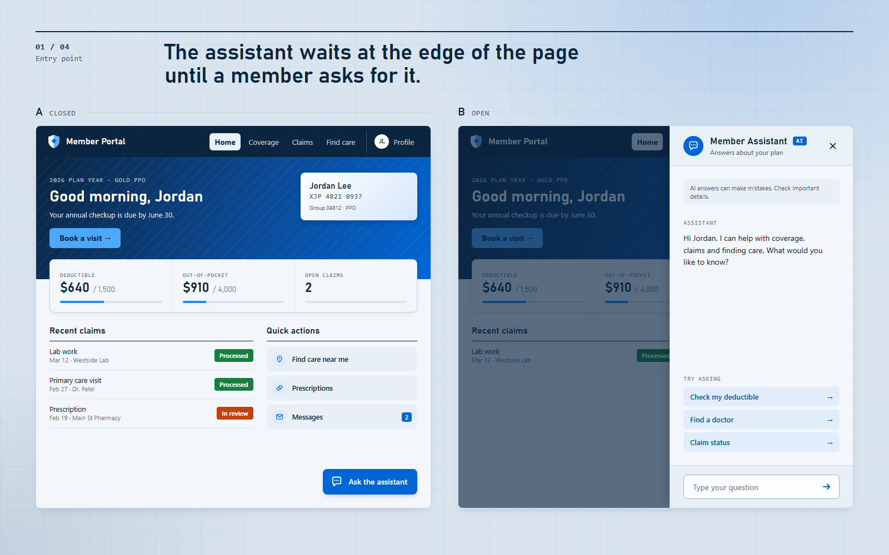
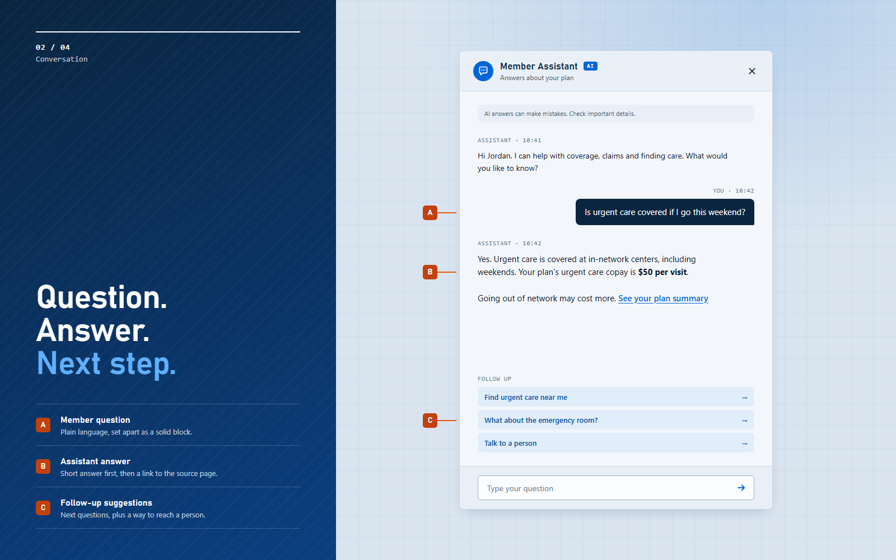
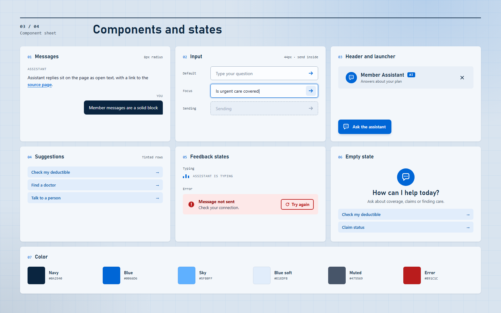
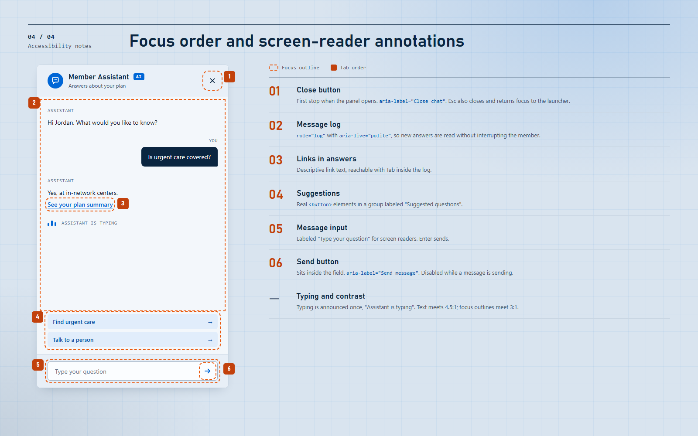

My role
Member Portal subject-matter expert · HTML prototyping · Accessibility and functional QA
I was the team's Member Portal expert. I knew how the portal's pages, patterns and edge cases worked, so I made sure the chat experience fit them.
I took the team's designs and built the chat components as working HTML prototypes, so we could test real behavior instead of static screens.
Team
UX Manager, 2 UX Designers, Content Writer, me
The challenge
BCBSM was adding an AI chat assistant to its member portal, used by millions of members. The assistant had to fit into an experience members already knew and meet strict accessibility and compliance standards. It also had to work inside existing portal systems that weren't built for it.

What I did
- Built the components in code. I built the chat window, message bubbles, input and states as interactive HTML prototypes based on the team's designs.
- Tested accessibility myself. I checked keyboard navigation, screen-reader output, focus order and contrast on every piece I built before it moved forward.
- Verified functionality before handoff. I confirmed every component behaved as intended, so engineers received prototypes that were already tested, not just specs.
- Kept it consistent with the portal. I made sure the chat matched existing portal patterns, so it felt native rather than bolted on.



What got in the way
The design side went smoothly. The hard part was engineering integration: limits in how the chat service connected with existing portal systems. Because the prototypes were already working, tested code, the team could pinpoint where design intent and system limits met.
Outcome
- Pilot launched to 1,000 members. It's the first step before a wider rollout.
- Handed off tested, accessible components that engineering could build from with fewer surprises.
- Feedback is still coming in; the pilot is in progress.
What I'd do next
My part of the project ended at handoff. With more time, I would run usability sessions with pilot members, especially screen-reader and older users, and use what they find to improve the components before the wider launch.